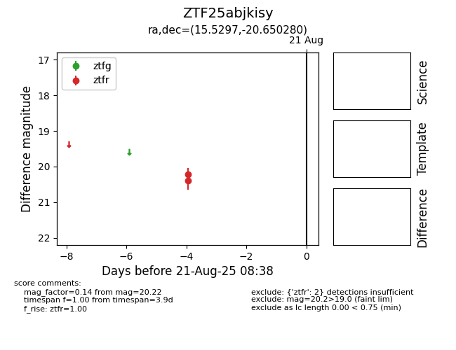

Target ZTF25abjkisy at 2025-08-21 08:38, see:
FINK: fink-portal.org/ZTF25abjkisy
Lasair: lasair-ztf.lsst.ac.uk/objects/ZTF25abjkisy
ALeRCE: alerce.online/object/ZTF25abjkisy
alt names
ZTF25abjkisy (ztf,alerce)
coordinates:
equatorial (ra, dec) = (15.5297,-20.65028)
galactic (l, b) = (144.1376,-83.07797)
photometry
last ztfr=20.22
2 ztfr detections
